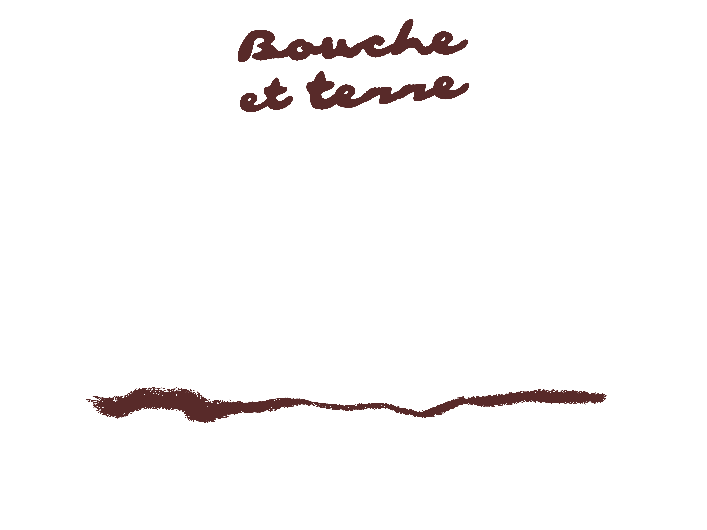

Bouche et Terre is genuinely curated by the soil and soul of
Ceci est Passata & Le Monde des Mille Couleurs
Ceci est Passata & Le Monde des Mille Couleurs


Wonder Wilder
Farmer Fest
Farmer Fest
Sunday 4.10.26
10H — 17H
10H — 17H
Le Monde
des Mille Couleurs
des Mille Couleurs
Zweerstraat 6
8900 Dikkebus
8900 Dikkebus
Bouche et Terre is not a festival you attend.
It’s one you digest. Vertraag. Maak je handen vuil. Eet
iets echts. We’re talking soil under your nails, smoke
in your hair and flavours that make you forget what
a supermarket looks like. One day of wildfarming,
handcraft, son et lumière — on a living field where la
terre a encore des choses à dire.
It’s one you digest. Vertraag. Maak je handen vuil. Eet
iets echts. We’re talking soil under your nails, smoke
in your hair and flavours that make you forget what
a supermarket looks like. One day of wildfarming,
handcraft, son et lumière — on a living field where la
terre a encore des choses à dire.
Curated by Ceci est Passata & Le Monde des Mille Couleurs